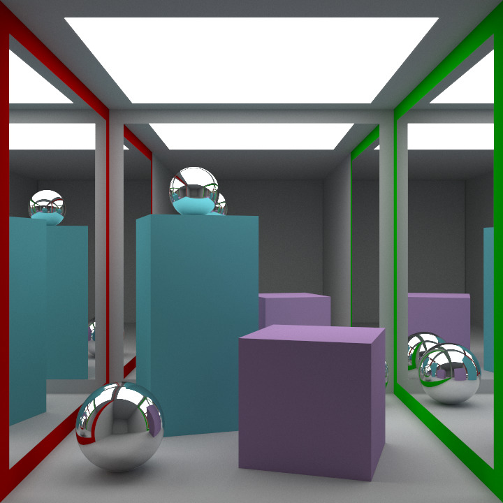

2017-07-26
The mathematics behind specular reflection in path tracing (or ray tracing) is simple.
When a ray encounters a reflective surface, the ray has to be recast following the rule “the angle of incidence is equal to the angle of reflection”.
Where d_r is the (unit) reflection ray direction, d_i is the (unit) incident
ray direction, and n is the unit normal:
d_r = d_i - 2 * n . d_i
I recently added specular reflections to my path tracer, Grayt. The following scene exhibits reflection, and contains 3 reflective mirrors (back and side walls), and 3 reflective spheres):
